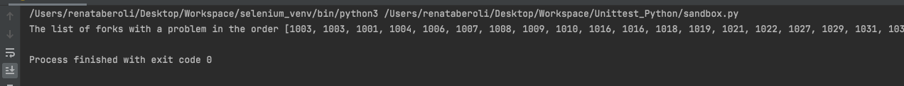
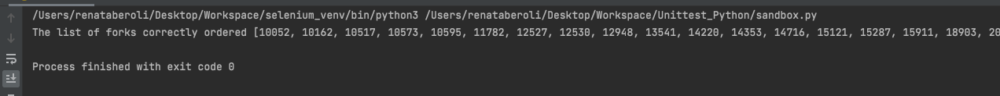

Testing GitHub Search API with python unittest
- Project Name: Testing GitHub Search API with python unittest
- Module Name: Searching for repositories
- Reference Document: Github Docs
- Test Scenarios: Positive Testing + Optional Parameters
- Created By: Renata Beroli
- Date of Creation: 24/11/2021
| Test Action Category |
Test Action Description |
Validate status code: |
200 OK for GET requests |
Validate state: |
N/A |
Performance sanity: |
N/A |
Test Cases
Those Test Cases bellow were executed and automatized in my GitHub --> Unittest - GitHub API
test_repo_search_by_name
| Description |
Test Data |
Expected Result |
| This test aims to confirm that the GitHub Search API returns just the result that matches the repository's name searched. |
Use: Keyword "Python". Qualifier "in:name". |
The GitHub API returns a list of repositories with the specific name that was searched. |
test_repo_search_by_description
| Description |
Test Data |
Expected Result |
| This test aims to confirm that Github Search API returns the repositories that have the searched keyword within the description. |
Use: Keyword "Python". Qualifier "in:description". |
The GitHub API returns one or more repositories that have the word “Python” in your description. |
test_repo_search_by_readme
| Description |
Test Data |
Expected Result |
| This test aims to confirm that GitHub Search API returns the repositories that have the the searched keyword in the readme. |
Use: Keyword "Cadmio". Qualifier "in:readme". |
The GitHub API returns one or more repositories with the word “Cadmio” in your readme. |
test_repo_search_by_owner_name
| Description |
Test Data |
Expected Result |
| This test aims to confirm that GitHub Search API returns just the repository of the specific patch. |
Use: owner/name "renataberoli/renataberoli.github.io". Qualifier "repo:owner/name". |
The GitHub API returns only the specific repository searched. |
test_repo_search_by_user
| Description |
Test Data |
Expected Result |
| The test aims to confirm that GitHub Search API returns only the repositories of a specific user. |
Use: User "renataberoli". Qualifier "user". |
The GitHub API returns only the repositories of “renataberoli”. |
test_repo_search_by_org
| Description |
Test Data |
Expected Result |
| The test aims to confirm that GitHub Search API returns only the repositories of a specific organization. |
Use: Organization: “github”. Qualifier: “org”. |
The GitHub API returns only the repositories of the organization “github”. |
test_repo_search_by_size
| Description |
Test Data |
Expected Result |
| The test aims to confirm that GitHub Search API returns only repositories of a certain size. |
Use: repository’s size: less or equal than 100 kilobytes. Qualifier: “size”. |
The GitHub API returns only repositories smaller or equal to 100 kilobytes. |
test_repo_search_by_num_of_followers
| Description |
Test Data |
Expected Result |
| The test aims to confirm that GitHub Search API returns only repositories of a certain number of followers. |
Use: Keyword “renataberoli”; Number of followers = 1. Qualifier: “in:description”; “followers”. |
The Github API returns only the repository with “renataberoli” in the description and that the number of followers is 1. |
Lack of clarity in the github response
This test was hard to do due to the confusion about the subject of the repository's "follower".
Problem evidence
test_repo_search_by_num_of_forks
| Description |
Test Data |
Expected Result |
| The test aims to confirm that GitHub Search API returns repositories of a certain number of forks. |
Use: Number of forks greater or equal to 1000; sort by “forks”; order ascendant. Qualifiers: “fork”; “sort”; “order”. |
The GitHub API returns a list of repositories with number of forks greater or equal to 1000 ordered ascendant. |
Bug found
I found an ordination issue repository's response when the number of forks is lower (like in the >=1000 scenario).
I also try with a highter (10000) value and the the response returns a ordered list.
"forks: >= 1000" 
"forks: >= 10000" 
To see the test code, consider
visiting the my Github repository.
test_repo_search_by_num_of_stars
| Description |
Test Data |
Expected Result |
| The test aims to confirm that GitHub Search API returns the repositories of a specific number of stars ordered ascendant. |
Use: Number of stars greater than 5000; sorted by: stars; ordered by: ascendant. Qualifiers: “stars”; “sort”; “order”. |
The GitHub API returned a list of repositories with more than 5000 and ordered ascendant. |
test_repo_search_by_creation_date
| Description |
Test Data |
Expected Result |
| The test aims to confirm that GitHub API returns the repositories from a specifc creation date. |
Use: Date: 2021-01-01. Qualifier: “created” |
The GItHub API returned a list of repositories with the creation date from “2021-01-01”. |
test_repo_search_by_push_date
| Description |
Test Data |
Expected Result |
| The test aims to confirm that GItHub API returns the repositories from a specifc pushed date. |
Use: Date: 2020-01-01. Qualifier: “pushed” |
The GItHub API returned a list of repositories with the creation date from “2020-01-01”. |
test_repo_search_by_language
| Description |
Test Data |
Expected Result |
| The test aims to confirm that GitHub API returns the repositories that have a specific language. |
Use: Language “python”. Qualifier: “language”. |
The GitHub API returned a list of repositories with “python” as a language. |
test_repo_search_by_topic
| Description |
Test Data |
Expected Result |
| The test aims to confirm that GitHub API returns the respositories os that have a specific topic. |
Use: Keyword “python. Qualifier: “topic”. |
The GitHub API returned a list of repositories with “python” as a topic in the topic list. |
test_repo_search_by_num_of_topics
| Description |
Test Data |
Expected Result |
| The test aims to confirm that GitHub API returns the repositories of a certain amount of topics. |
Use: Number of topics: 1. Qualifier: “topics”. |
The GitHub API returned only repositories with one topic applied to repository. |
test_repo_search_by_license
| Description |
Test Data |
Expected Result |
| The test aims to confirm that GitHub API returns the repositories that contain the keyword and a specific license applied. |
Use: Keyword “python”; licence “eupl-1.1”. Qualifier: “license”. |
The GitHub API returned only repositories that contain the keyword “python” and the license “eupl-1.1”. |
test_repo_search_by_visibility
| Description |
Test Data |
Expected Result |
| The test aims to confirm that GitHub API returns the repositories with the two types of visibility (public and private). |
Use: Private test = Keyword “signature” in readme; user “renataberoli”. Qualifiers: “in:readme”; “user”; “is:private”. Public test = Keyword “renataberoli” in description; user “renataberoli”. Qualifiers: “in:description”; “user”; “is:public”. |
Private test = The GitHub API returned an empty object due to the private state of the repository and the test without authentication. Public test = The GitHub API returned only the repository searched. |
test_repo_search_by_if_is_mirror
| Description |
Test Data |
Expected Result |
| The test aims to confirm that GitHub API returns the repositories that are mirrors. |
Use: Qualifier: “mirror:true”. |
The GitHub API returned only repositories that are mirrors. |
test_repo_search_by_if_is_archived
| Description |
Test Data |
Expected Result |
| The test aims to confirm that GitHub API returns the repositories that were archived. |
Use: Qualifier: “archived:true”. |
The GitHub API returned a list of only archived repositories. |
test_repo_search_by_issue_label_good_first_issues
| Description |
Test Data |
Expected Result |
| The test aims to confirm that GitHub API returns the repositories filter by a specific label of these issues. |
Use: Keyword “renataberoli” in description; Amount of issues with the label: 1. Qualifiers: “in:description” “good-first-issues”. |
The GitHub API returned a specific repository with “renataberoli” in the description and 1 issue with the label “good first issues”. |
test_repo_search_by_issue_label_wanted_issues
| Description |
Test Data |
Expected Result |
| The test aims to confirm that GitHub API returns the repositories filter by a specific label of these issues. |
Use: Keyword “renataberoli” in description; Amount of issues with the label: 1. Qualifiers: “in:description” “help-wanted-issues”. |
The GitHub API returned a specific repository with “renataberoli” in the description and 1 issue with the label “help wanted issues”. |
| Description |
Test Data |
Expected Result |
| The test aims to confirm that GitHub API returns only repositories that have the ability to sponsor. |
Use: Qualifier: “is:sponsorable”. |
The GitHub API returned a list of repositories that has the ability to sponsor. |
Unable to reproduce
The API didn't return an object that helped to confirm this test.test_repo_search_by_founding_file
test_repo_search_by_founding_file
| Description |
Test Data |
Expected Result |
| The test aims to confirm that GitHub API returns only repositories that have a founding file (FUNDING.yml ). |
Use: Qualifier: has:funding-file |
The GitHub API returned a list of repositories that has a file named “FUNDING.yml “. |